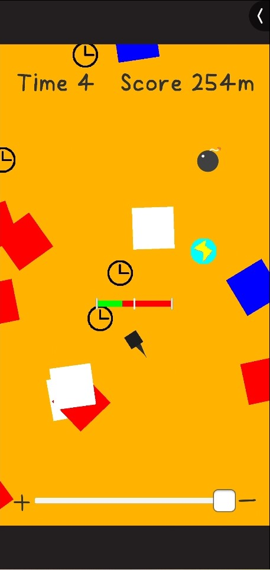

【JumpAndClimb】Ver5.0公開!!!
ようやくJumpAndClimbの"Ver5.0"をリリースすることができました！
Ver5.0では特に、Ver4.0の反省を大いに生かしてアップデートを制作をしていました。
Ver5.0の大きな更新点
新アイテム追加！！
アイテム名：MoreJump
効果：
取得してから３秒間、スタミナの上限をジャンプ１回分増加させる。
オブジェクトがたくさん！さらに大きく！
比較）
↓Ver4.0
↓Ver5.0
オブジェクト出現数がかなり増加！オブジェクト自体も大きくなったことで、さらに迫力が増すようになりました！
※その他更新点はリリースノートを参照してください
Ver4.0での反省点について
１，最悪の"時計メタ"
特に一番悪かったと思っているのが、時計アイテムに関してです。
Ver4.0ではVer3.0の時に比べて時計が出る確率をかなり下げていました。
理由としては、Ver3.0では逆に時計の出現率が高く、あまりにも時間制限を気にすることなく無限にスコアを上げることができたため、
ランキングTopの方達は何千メートルというスコアになっており、そこが少しばかり気にかかっていました。
ですが、Ver4.0の時計出現率の調整はやりすぎだったと大いに反省しています。
時計の出現率を大幅に下げたことにより、平均スコアがあまりにも下がりすぎてしまいました。
Ver4.0では72人のプレイヤー達に遊んでいただいたようですが、そのうちスコアが300mを超えたのは製作者含めてたったの6人だけでした。
２，"いらない"アカウント作成＆ログインシステム
Ver3.0までランキングシステムにNCMBというものを使用していたのですが、このサービスが終了することになり、
別サービスPlayFabに移行する際に、せっかくならアカウント作成とログインシステムも作ってやろう！と意気込み、Ver4.0に実装することになりました。
しかも初起動時にアカウントが自動生成され、その際に発行されたID入力すれば別機種でもデータが引き継がれるという凝りっぷり。
実装まで相当の技量と時間を要しましたが、リリースしてから少し経った頃、これ別にいらなくね？となってしまいました。
このゲームのもともとのコンセプトが「暇つぶしにサクッとできるゲーム」だったのにも関わらず、初回起動時には一度アカウントを作成する手順を通ってからやっとゲームをプレイできるという面倒な仕様になってしまいました。
UnityRoomで、初見で気になってプレイしようとしたらいきなり「アカウント作れ！」ってなるのも...
「手軽にできるゲーム」ではなくなってしまったよね。
あと「IDでログインできる仕様」に関しては使用した人がいるのかと思うくらい必要のない機能だったと今更ながら思っています。
単純に「自分が作ってみたかっただけ」の”エゴ”が作品を悪くしてしまった結果に反省が必要です。
2024/07/21
ブログ記事一覧に戻る